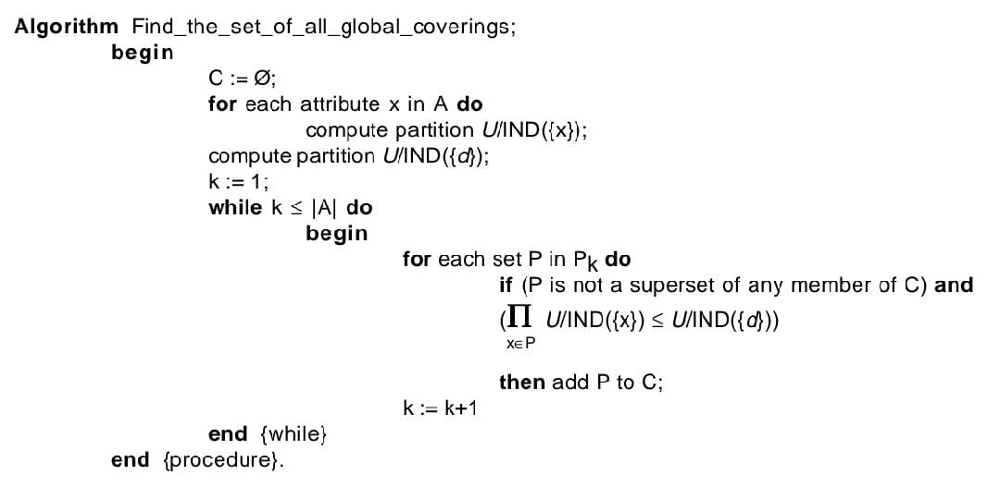
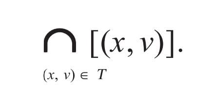

LERS Classification System
For classification of unseen cases, the LERS system uses a “bucket brigade
algorithm” (Booker, Goldberg, & Holland, 1990; Holland, Holyoak, & Nisbett, 1986),
extended to use partial matching of rules and cases. The decision to which class a case
belongs is made on the basis of two parameters: strength and support. They are defined
as follows: Strength is the total number of cases correctly classified by the rule during
training. The second parameter, support, is defined as the sum of scores of all matching
rules from the class. As follows from experiments, partial matching is a valuable
mechanism when complete matching fails (Grzymala-Busse, 1994). In the LERS classi-
fication system, the user may use 16 strategies for classification. However, as a result
of experiments, again, it can be shown that the most successful strategy is based on
strength, support, and partial matching while ignoring specificity (number of conditions
in a rule) (Grzymala-Busse & Zou, 1998).
LERS equips rules with numbers characterizing quality of rules. Thus, like VPRSM,
LERS goes beyond the original rough set theory. The generalizations of the original
rough set theory represented by VPRSM and LERS are different. The prime concern of
VPRSM is forming decision tables, while LERS was designed to form rule sets. However,
all numbers related with rules and defined on the basis of VPRSM may be computed from
numbers allocated by LERS to each rule. On the other hand, the LERS classification
system uses ideas that are foreign to VPRSM, such as specificity, support, and partial
matching. Thus, the two generalizations are independent and neither can be reduced to
the other.
Related Work
The basics of the theory are summarized in Pawlak’s book (Pawlak, 1991). He also
introduced novel theories of rough functions and rough relations, which directly apply
to the creation of approximate functional and relational models from data (Pawlak, 1996).
Since the introduction of the original RST, several extensions of the original model were
proposed (Greco, Matarazzo, Slowinski, & Stephanowski, 2000; Ziarko, 1993). In
particular, VPRSM was first published in Ziarko (1993) and was further investigated by
Beynon (2000), Kryszkiewicz (1994), and others, and served as a basis of a new approach
to inductive logic programming (Mahesvari, Siromoney, Mehata, & Inoue, 2001) . The
initial notion of a data-acquired decision table, also called an information system, is
credited to Pawlak (1991). The probabilistic decision tables were introduced by Ziarko
(1998b). The LERS system was first described in Grzymala-Busse, 1992). Its most
important algorithm, LEM2, was also presented in Chan and Grzymala-Busse(1994).
Initial versions of LERS were presented by Budihardjo, Grzymala-Busse , and Woolery
(1991), and Grzymala-Busse (1997, 1998).
There exists an extensive body of literature on rough set theory applications to
knowledge discovery and data mining. A comprehensive review of the state art is
available in Polkowski and Skowron (1998). A number of sources reported experiments
with using rough set theory for pattern recognition, including speech recognition,
handwriting recognition, and music fragment classification (Kostek, 1998; Plonka &
Mrozek, 1995; Zhao, 1993). The rough set theory was first applied to trainable control
by Mrozek (1986) when modeling control behavior of cement mill operators. Important
applications of LERS were published in Freeman, Grzymala-Busse , Riffel, and Schroeder
(2001) , Grzymala-Busse et al. (2001), Grzymala-Busse and Gunn (1995), Grzymala-Busse
and Woolery (1994), Gunn and Grzymala-Busse (1994), Loupe, Freeman, Grzymala-Busse,
and Schroeder (2001), Moradi, Grzymala-Busse, and Roberts (1995), and Woolery,
Grzymala-Busse, Summers, and Budihardjio(1991). Some other rough set theory-based
control applications are reported in Peters, Skowron and Suraj (1999).
ROUGH SET THEORY
Rough set theory was created as a tool to handle inconsistent data. This section
presents the fundamentals of the original rough set theory. The complete description
of the theory may be found in Pawlak (1991) (see also Grzymala-Busse, 1995).
Global Coverings
We are assuming that the input data set is in a form of a table. Rows of the table
are called cases (or examples). Columns are labeled by attributes and a decision. An
example of such a table is presented in Table 1.
Table 1 depicts a simplified data base showing eight homeowners (cases) applying
to a bank for a loan to buy a car. Any such table defines an information function ρ that
maps the set of all ordered pairs (case, attribute) into the set of attribute values. For
example, ρ (c1, Home) is equal to expensive.
Table 1: Consistent data set

One of the fundamental ideas of rough set theory is the relation of the set of all cases
implied by a subset P of the set A of all attributes, called an indiscernibility relation, and
denoted by IND(P). For any two cases c and c', the relation indiscernibility is defined
as follows:
(c, c') ∈ IND(P) if and only if ρ (c, a) = ρ (c', a) for all a ∈ P.
Obviously, IND(P) is an equivalence relation, so it may be represented by the
partition on U induced by IND(P). This partition will be denoted by U/IND(P). Two cases
c and c' belong to the same set of the partition U/IND(P) if and only if (c, c') ∈ IND(P).
For example,
U/IND({Home}) = {{c1, c3, c8}, {c2, c5, c6, c7}, {c4}}
and
U/IND({Home, Boat}) = {{c1, c8}, {c2, c5}, {c3}, {c4}, {c6, c7}}.
Sets belonging to the partition U/IND(P) are called P-elementary sets or blocks.
Elements c1 and c3 belong to the same {Home}-elementary set (or block) of U/ND({Home})
because the value of variable Home is the same for both c1 and c3.
In a special case where set P contains only one variable, the decision, usually
denoted by d, the corresponding sets that constitute U/IND(P) are called concepts. In
Table 1, we distinguish two concepts: {c1, c3, c5, c7}, and {c2, c4, c6, c8}. The former
concept consists of all accepted applicants, the latter concept consists of all rejected.
The basic problem is how to determine a subset P of the set A describes all concepts.
In different words, our problem is whether a subset P of A is sufficient to distinguish all
concepts. For example, the single attribute {Home} is not sufficient, since Home has the
same value expensive for c1 and c8, yet c1 and c1 belong to two different concepts.
Moreover, a subset {Home, Boat} is not sufficient either, since both have the same
values for c1 and c8 (expensive, no), and c1 and c2, as observed before, belong to two
different concepts. On the other hand, the set of all attributes: {Home, Boat, Credit_Card,
Age} is sufficient, since values of all four attributes are unique for corresponding
concepts. The value vector (expensive, no, yes, old) of attribute vector (Home, Boat,
Credit_Card, Age) characterize only one case, c1, that belongs to the concept approved
loan applications. We say that {d} depends on the subset P = {Home, Boat, Credit_Card,
Age}. The necessary and sufficient condition for {d} to depend on P is
The sign “≤” in the above expression concerns partitions. For partitions π and τ
on U, π ≤ τ if and only if for each block B of π there exists a block B' of τ such that B
⊆ B'. In other words, {d} depends on P if and only if every concept defined by {d} is
the union of some P-elementary sets (or blocks of U/IND(P)).
In our example,
U/IND({Loan_Application}) = {{c1, c3, c5, c7}, {c2, c4, c6, c8}},
U/IND({Home, Age}) = {{c1, c3}, {c2, c6}, {c4}, {c5}, {c7}, {c8}},
so
U/IND({Home, Age} ≤ U/IND({Loan_Application}
or, {Loan_Application depends on {Home, Age}. It is not difficult to check that U/
IND({Home, Age} ≤ U/IND({Loan_Application}: every block of U/IND({Home, Age})
is a subset of corresponding block from U/IND({Loan_Application}).
The minimal subset P such that {d} depends on P is called a global covering of {d}.
The global covering is also called relative reduct (Pawlak, 1991). In the example in Table
1, there exist precisely two global coverings of Loan_Application: {Home, Age} and
{Home, Credit_Card, Boat}. Algorithms for finding the set of all global coverings was
published in Grzymala-Busse (1991)
Algorithm for Finding the Set of All Global Coverings
The aim of the algorithm is to find the set C of all global coverings of {d}. The
cardinality of the set X is denoted |X|. Let k be a positive integer. The set of all subsets
of the same cardinality k of the set A is denoted Pk
, i.e., Pk
= {{xi1, xi2,..., xik} | xi1, xi2,...,
xik ∈ A}.

Time complexity of the algorithm for finding the set of all coverings of R in S is
exponential.
Local Coverings
In the definition of global covering, all involved attributes and decision are
considered globally, i.e., for all cases. Here we will introduce a local covering, defined
by variable-value pairs. Let x be a variable (an attribute or a decision), and let v be a value
of x. The block of a variable-value pair (x, v), denoted [(x, v)], is the set of all elements
of the universe U that for variable x have value v. Thus, the concept is a block of [(d, w)]
for some value w of decision d. For example, in Table 1, the block of (Home, expensive)
is {c1, c3, c8}.
Let B be a subset of the universe U. Let T be a non-empty set of attribute-value pairs,
where all involved attributes are different. The block of T, denoted [T], is defined as

Let B be the set {c1, c3, c5, c7}, that is, B is the block of (Loan_Application,
approved}. In the example from Table 1, let X be the set {(Home, expensive), (Boat, no)}.
The block [X] of X is equal to
[(Home, expensive)] ∩ [(Boat, no)] = {c1, c3, c8} ∩ {c1, c6, c7, c8} =
{c1, c8} ⊄ {c1, c3, c5, c7} = B.
Thus B = {c1, c3, c5, c7} does not depend on X. On the other hand, for Y equal to
{(Home, expensive), (Age, Old)}, the block [Y] of Y is equal to
[(Home, expensive)] ∩ [(Age, Old] = {c1, c3, c8} ∩ {c1, c2, c3, c6} =
{c1, c3} ⊆ {c1, c3, c5, c7} = B
so B = {c1, c3, c5, c7} depends on {(Home, expensive), (Age, Old)}.
We say that B depends on a set T of attribute-value pairs if and only if [T] ⊆ B. Set
T is a minimal complex of B if and only if B depends on T and no proper subset T' of T
exists such that B depends on T'.
The set Y = {(Home, expensive), (Age, Old)} is a minimal complex of B = {c1, c3, c5,
c7}, since B does not depend on any subset of Y, because
[(Home, expensive)] ⊄ B
and
[(Age, Old)] ⊄ B.
However, there exist more minimal complexes of B. For example, Z = {(Home,
Middle), (Credit_Card, yes)} is another minimal complex of B, because
[Y] = [{(Home, Middle), (Credit_Card, yes)}] =
[(Home, Middle)] ∩ [(Credit_Card, yes)] = {c2, c5, c6, c7} ∩ {c1, c4, c5, c7} =
{c5, c7} ⊆ B,
[{(Home, Middle)] ⊄ B, and [(Credit_Card, yes)}] ⊄ B.